Reform Synagogues in Canada
Find a Reform synagogue near you, from Vancouver to Montreal. Open any congregation to read its history, see its building and get directions.
Open the directory in the appBritish Columbia
-
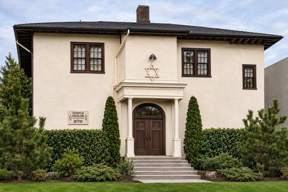
Temple SholomVancouverVancouver's only Reform congregation, founded in 1965; its first home was firebombed in 1985 and the Oak Street synagogue opened in 1988.
-
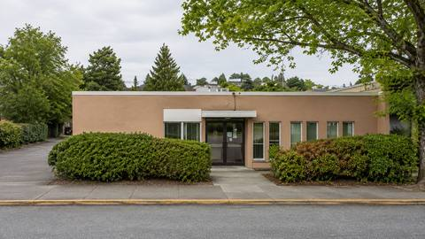
Kolot Mayim Reform TempleVictoriaVancouver Island's Reform congregation, 'Voices of the Water', founded in 1998 by a few families and based at the Victoria JCC.
Alberta
-
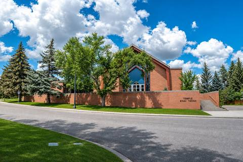
Temple B'nai TikvahCalgaryCalgary's Reform congregation, begun in a living room in 1979 and settled since 2004 in a converted 1957 church in Britannia.
-
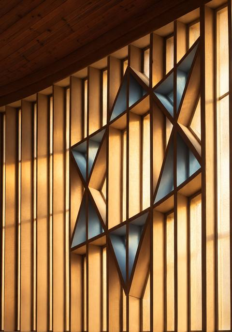
Temple Beth Ora CongregationEdmontonEdmonton's only Reform synagogue, founded in 1979 by three families and housed since 2007 at Chesed Shel Emeth in Westmount.
Manitoba
-
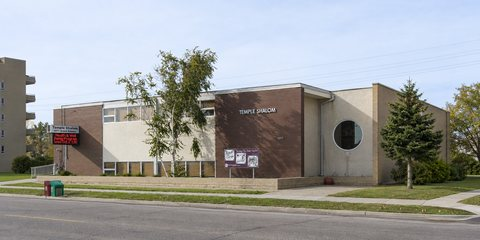
Temple ShalomWinnipegWinnipeg's only Reform synagogue, opened in 1965 and settled at Grant Avenue and Wilton since 1987.
Ontario
-
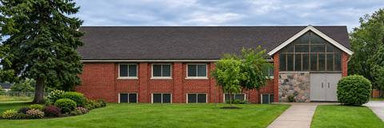
B'nai Shalom v'TikvahAjaxDurham Region's first Reform synagogue, 'Children of Peace and Hope', formally established in May 1994 and settled at St. Paul's United Church in Ajax.
-
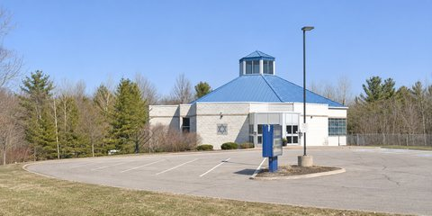
Am Shalom CongregationBarrieThe only synagogue in Barrie and Simcoe County, grown from the Simcoe County Jewish Association and housed since 2003 in a building on donated land.
-
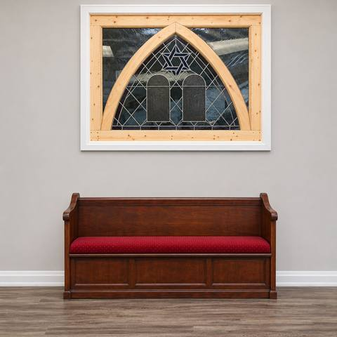
Har Tikvah Congregation of BramptonBramptonBrampton's only synagogue, begun with a tea for Jewish women in 1977; for decades it worshipped in an 1876 church it bought in 1983.
-
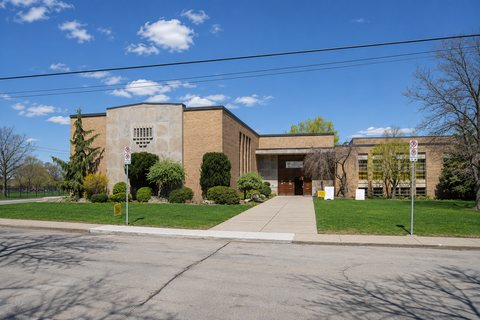
Temple Anshe SholomHamiltonCanada's first Reform congregation and Ontario's oldest Jewish congregation, formed by Hamilton's German Jewish families in 1853.
-
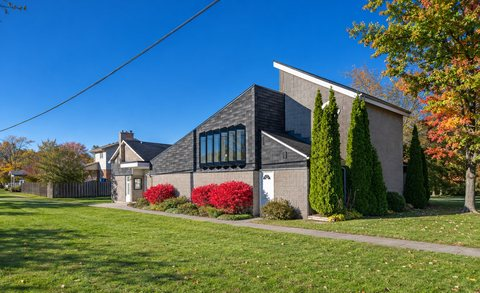
Congregation Iyr Ha-MelechKingstonKingston's Reform congregation, 'City of the King', organised around Rosh Hashanah 1975 by Queen's University families.
-
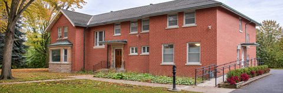
Temple Israel of LondonLondonLondon's Reform congregation, founded in 1985 from the London Jewish Family Association and led since 2010 by the city's first full-time female rabbi.
-
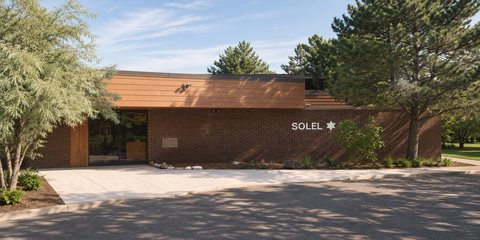
Solel CongregationMississaugaMississauga's first synagogue and only Reform congregation, 'Pathfinder', founded in 1973 and settled on Folkway Drive since the last day of 1978.
-
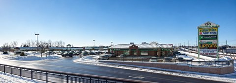
Or Hadash SynagogueNewmarketA small, family-like Reform congregation serving Newmarket and northern York Region since the early 1990s.
-
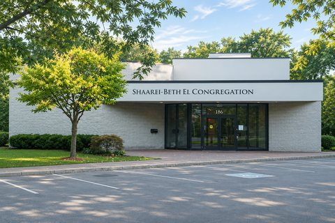
Shaarei-Beth El Congregation of HaltonOakvilleHalton's only synagogue, begun by fifteen Oakville families in 1955 and built on land offered by a local farming family.
-
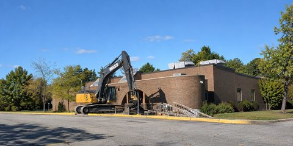
Temple IsraelOttawaOttawa's first and only Reform congregation, founded in the spring of 1966, in its Prince of Wales Drive synagogue since 1975.
-
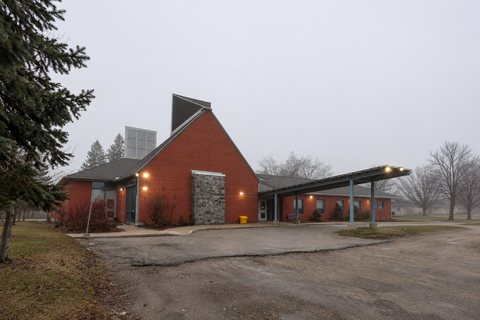
Temple ShalomWaterlooKitchener-Waterloo's Reform congregation, formed in 1965, which in 1996 built The Cedars jointly with a United Church, known as Canada's first purpose-built Jewish-Christian house of worship.
-
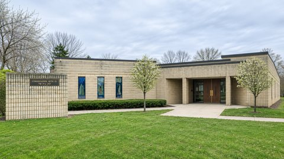
Congregation Beth ElWindsorWindsor's only Reform congregation, conceived in a living room in 1959, whose first rabbi later founded Humanistic Judaism.
-
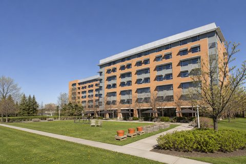
Beth Chaverim SynagogueTorontoThe Reform congregation of residents and families at Baycrest, Toronto's Jewish seniors' centre, worshipping in The Terraces.
-
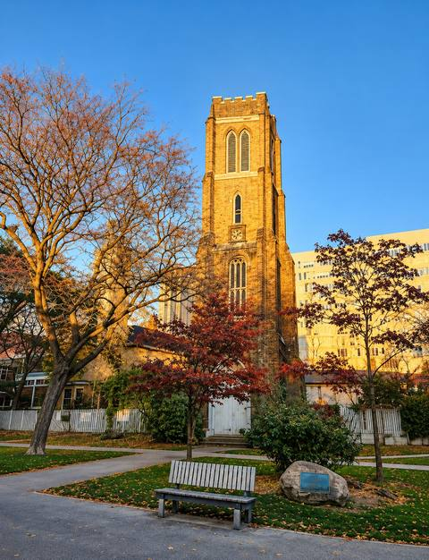
City ShulTorontoDowntown Toronto's Reform congregation, founded in October 2012 by Rabbi Elyse Goldstein and worshipping in borrowed church halls near the University of Toronto.
-
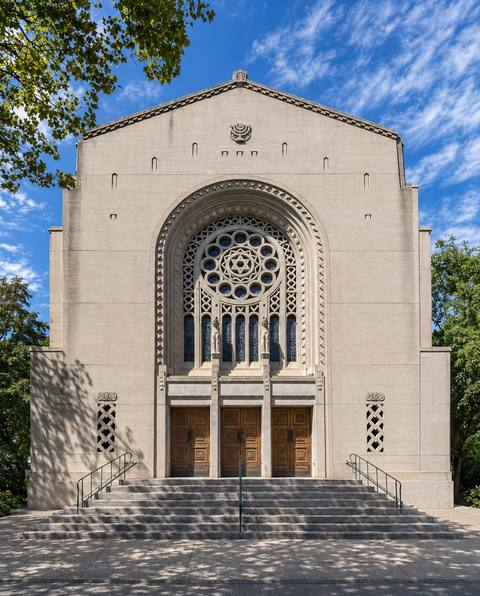
Holy Blossom TempleTorontoToronto's oldest Jewish congregation (1856) and the largest Reform congregation in Canada, in its landmark Bathurst Street temple since 1938.
-
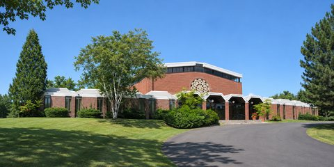
Temple Emanu-ElTorontoA small North York Reform congregation on a wooded six-acre site, shaped by decades of social action under Rabbi Arthur Bielfeld.
-
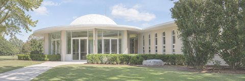
Temple Sinai Congregation of TorontoTorontoFounded in 1954 by fourteen families and a student rabbi who stayed forty years; now one of Toronto's largest Reform congregations.
-
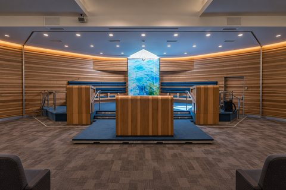
Temple Har ZionThornhillA music-centred, fully egalitarian Reform congregation founded in 1971 by families who believed a temple could flourish northeast of Toronto.
-
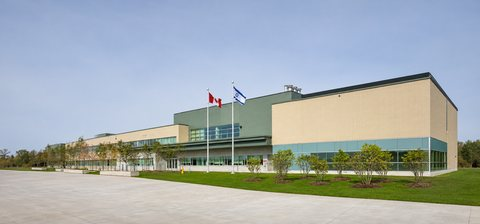
Temple Kol AmiVaughanFounded in 1988 by families who dreamed of an inclusive synagogue built around Shabbat and learning, and housed since 2021 on the Vaughan Jewish Community Campus.
Quebec
-
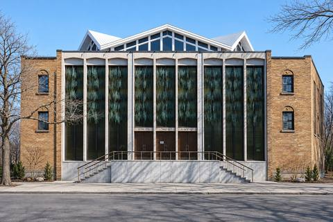
Temple Emanu-El-Beth SholomWestmount (Montreal)Canada's oldest Reform congregation (1882) and the only one left in Quebec; its present Sherbrooke Street sanctuary was dedicated in 1960.
Former Congregations
-
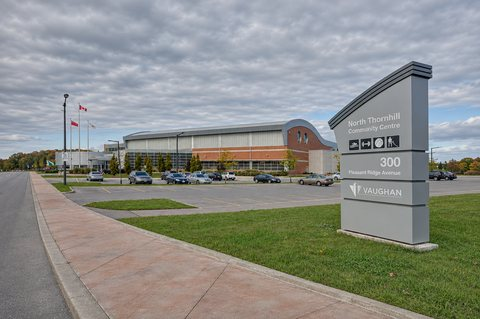
Neshamah Congregation of York RegionVaughanA no-building, low-dues Reform congregation founded in 2011 for young families in Thornhill Woods; its members were proposed to join Temple Kol Ami in 2018.
-
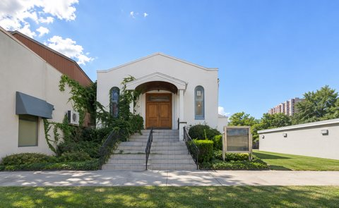
Congregation B'nai TikvahNiagara FallsNiagara Falls' only synagogue, formed in 2000 by Canada's first Conservative-Reform merger; its 1937 Ferry Street building was sold in 2020.